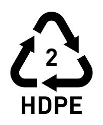

Some types of plastic bags harm the environment, also they are impractical so it is better to use eco-friendly bags, Know more about the products of plastic type one.
Read more
Maintaining proper waste disposal protects the planet, checkout the right ways to get rid of plastic type three.
Read more
The unawareness about plastic leads to wasting large amounts of plastics that could be recycled.
Read more
Aquatic creatures' life is in danger; due to getting rid of plastic wastes in the ocean, Check how to get rid of plastic-type five.
Read more
The wrong way people use plastic affect their health badly, Know how to use plastic-type six.
Read more
As some plastics have the ability to be recycled, which will help in decreasing the production of plastics, Know more about recycling for plastic-type 7.
Read more